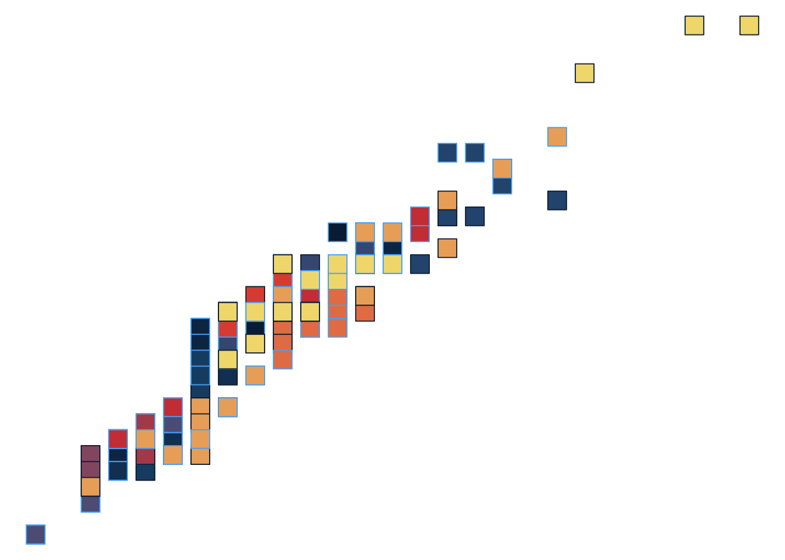
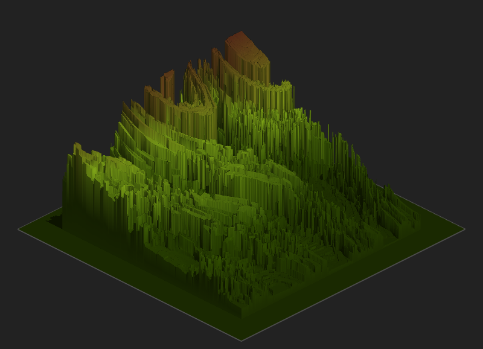
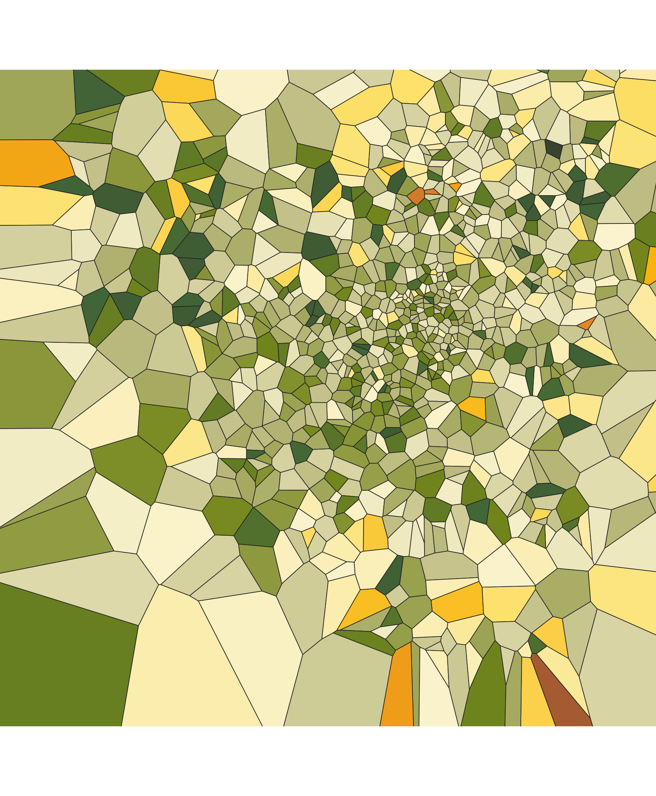
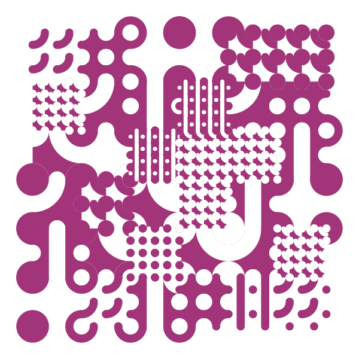

Code
library(tidyverse)
library(NatParksPalettes)
library(patchwork)
library(scales)
library(ggthemes)
library(rayshader)
library(ambient)
library(tictoc)
library(here)
library(ggforce)
library(deldir)
library(voronoise)
library(truchet)
library(sf)library(tidyverse)
library(NatParksPalettes)
library(patchwork)
library(scales)
library(ggthemes)
library(rayshader)
library(ambient)
library(tictoc)
library(here)
library(ggforce)
library(deldir)
library(voronoise)
library(truchet)
library(sf)# function to save ggplot objects
save <- function(object, version, width, height) {
filename <- paste0(deparse(substitute(object)), "_v", version, "_", today(), ".png")
ggsave(filename = here::here("activities", "images", filename),
plot = object,
width = width,
height = height,
units = "in",
dpi = 150)
}ggplot(data = mpg, aes(x = cty, y = hwy, color = year, fill = manufacturer)) +
geom_point(size = 6, shape = 22) +
scale_fill_manual(values = natparks.pals("Volcanoes", n = 15, type = "continuous")) +
theme_void() +
theme(legend.position = "none")
polar_art()Function:
polar_art <- function(seed, n, palette) {
# set the state of the random number generator
set.seed(seed)
# data frame containing random values for
# aesthetics we might want to use in the art
dat <- tibble(
x0 = runif(n),
y0 = runif(n),
x1 = x0 + runif(n, min = -.2, max = .2),
y1 = y0 + runif(n, min = -.2, max = .2),
shade = runif(n),
size = runif(n)
)
# plot segments in various colours, using
# polar coordinates and a gradient palette
dat |>
ggplot(aes(
x = x0,
y = y0,
xend = x1,
yend = y1,
colour = shade,
linewidth = size
)) +
geom_segment(show.legend = FALSE) +
coord_polar() +
scale_y_continuous(expand = c(0, 0)) +
scale_x_continuous(expand = c(0, 0)) +
scale_colour_gradientn(colours = palette) +
scale_size(range = c(0, 10)) +
theme_void()
}Output:
polar_art(
# change seed
seed = 666,
# change numbers
n = 200,
# change palette
palette = c("cornflowerblue", "turquoise4", "orange",
"yellow", "darkgreen", "lavender")
)polar_art_02()Function:
polar_art_02 <- function(seed, n, palette) {
# set the state of the random number generator
set.seed(seed)
# data frame containing random values for
# aesthetics we might want to use in the art
dat <- tibble(
# changing distributions
x0 = rnorm(n),
y0 = rnbinom(n, size = rpois(1, 10), prob = 0.5),
x1 = x0 + runif(n, min = -.2, max = .2),
y1 = y0*2 + rbeta(n, shape1 = 3, shape2 = 2),
shade = rnorm(n),
size = rpois(n, 20)
)
# plot segments in various colours, using
# polar coordinates and a gradient palette
dat |>
ggplot(aes(
x = x0,
y = y0,
xend = x1,
yend = y1,
colour = shade,
linewidth = size
)) +
geom_segment(show.legend = FALSE) +
coord_polar() +
scale_y_continuous(expand = c(0, 0)) +
scale_x_continuous(expand = c(0, 0)) +
scale_colour_gradientn(colours = palette) +
scale_size(range = c(0, 10)) +
theme_void()
}Output:
polarpalette <- c("cornflowerblue", "turquoise4", "orange",
"yellow", "darkgreen", "lavender")
polar50 <- polar_art_02(seed = 666, n = 50, palette = polarpalette)
polar100 <- polar_art_02(seed = 666, n = 100, palette = polarpalette)
polar300 <- polar_art_02(seed = 666, n = 300, palette = polarpalette)
polar50 + polar100 + polar300
It’s a “random” process - different output every time!
sample_canva()Function:
# the original function from the first session
sample_canva <- function(seed = NULL) {
if(!is.null(seed)) set.seed(seed)
sample(ggthemes::canva_palettes, 1)[[1]]
}
# the extended function used in later sessions
sample_canva2 <- function(seed = NULL, n = 4) {
if(!is.null(seed)) set.seed(seed)
sample(ggthemes::canva_palettes, 1)[[1]] |>
(\(x) colorRampPalette(x)(n))()
}Output:
canva50 <- polar_art(seed = 666, n = 452, palette = sample_canva(seed = 50))
canva1000 <- polar_art(seed = 1, n = 323, palette = sample_canva(seed = 1000))
canva50000 <- polar_art(seed = 234987, n = 797, palette = sample_canva(seed = 50000))
canva50 + canva1000 + canva50000
sample_named_colors()Function:
sample_named_colors <- function(n) {
# sample from list of named colors in R
sample(x = colours(distinct = TRUE),
size = n,
replace = FALSE)
}Output:
sample1 <- polar_art(seed = 666, n = 50, palette = sample_named_colors(n = 50))
sample2 <- polar_art(seed = 111, n = 90, palette = sample_named_colors(n = 100))
sample3 <- polar_art(seed = 444, n = 150, palette = sample_named_colors(n = 10))
sample1 + sample2 + sample3
sample_canva_random()Function:
sample_canva_random <- function(seed = NULL) {
# select a number of colors from a uniform distribution (and round)
n <- round(runif(n = 1, min = 1, max = 600), digits = 0)
# sample from list of all Canva colors
sample(unlist(ggthemes::canva_palettes),
size = n,
replace = FALSE)
}Output:
randomcanva1 <- polar_art(seed = 4245, n = 85, palette = sample_canva_random(seed = 1))
randomcanva2 <- polar_art(seed = 7832574, n = 425, palette = sample_canva_random(seed = 2))
randomcanva3 <- polar_art(seed = 453452, n = 254, palette = sample_canva_random(seed = 3))
randomcanva1 + randomcanva2 + randomcanva3
Functions:
sample_canva <- function(seed = NULL) {
if(!is.null(seed)) set.seed(seed)
sample(ggthemes::canva_palettes, 1)[[1]]
}
sample_data <- function(seed = NULL, n = 100){
if(!is.null(seed)) set.seed(seed)
dat <- tibble(
x0 = runif(n),
y0 = runif(n),
x1 = x0 + runif(n, min = -.2, max = .2),
y1 = y0 + runif(n, min = -.2, max = .2),
shade = runif(n),
size = runif(n),
shape = factor(sample(0:22, size = n, replace = TRUE))
)
}
polar_styled_plot <- function(data = NULL, palette) {
ggplot(
data = data,
mapping = aes(
x = x0,
y = y0,
xend = x1,
yend = y1,
colour = shade,
size = size
)) +
coord_polar(clip = "off") +
scale_y_continuous(
expand = c(0, 0),
limits = c(0, 1),
oob = scales::oob_keep
) +
scale_x_continuous(
expand = c(0, 0),
limits = c(0, 1),
oob = scales::oob_keep
) +
scale_colour_gradientn(colours = palette) +
scale_size(range = c(0, 10)) +
theme_void() +
guides(
colour = guide_none(),
size = guide_none(),
fill = guide_none(),
shape = guide_none()
)
}Output with modifications to sample data, using polar_styled_plot(), and using geoms:
# changing seed
sampledat1 <- sample_data(n = 25, seed = 666)
sampledat1plot <- polar_styled_plot(palette = sample_canva(seed = 100)) +
# using segment
geom_segment(data = sampledat1, linetype = "331311") +
# adding line
geom_line(data = sampledat1) +
# adding segment
geom_segment(data = sampledat1, aes(x = x0, xend = x1), linewidth = 0.5)
# changing n
sampledat2 <- sample_data(n = 100, seed = 666)
sampledat2plot <- polar_styled_plot(palette = sample_canva(seed = 44)) +
geom_point(data = sampledat2, aes(size = (y0 - y1)^2)) +
# adding segment
geom_segment(data = sampledat2, aes(y = y0, yend = y1), linewidth = 1) +
geom_segment(data = sampledat2, aes(x = x0, xend = x0 + 0.11), alpha = 0.2)
sampledat1plot + sampledat2plot
my_styled_plot()Function:
my_styled_plot <- function(data = NULL, palette) {
ggplot(
data = data,
mapping = aes(
x = x0,
y = y0,
xend = x1,
yend = y1,
colour = shade,
size = size
)) +
# coord_cartesian() +
scale_y_continuous(
expand = c(0, 0),
limits = c(0, 1),
oob = scales::oob_keep
) +
scale_x_continuous(
expand = c(0, 0),
limits = c(0, 1),
oob = scales::oob_keep
) +
scale_colour_gradientn(colours = palette) +
scale_size(range = c(0, 10)) +
theme_void() +
guides(
colour = guide_none(),
size = guide_none(),
fill = guide_none(),
shape = guide_none()
)
}Output:
sampledat3 <- sample_data(n = 100, seed = 666)
msp1 <- my_styled_plot(data = sampledat3, palette = sample_canva_random(seed = 40)) +
geom_line()
msp2 <- my_styled_plot(data = sampledat3, palette = sample_canva_random(seed = 40)) +
geom_segment(aes(x = 0, xend = x1, y = 0, yend = y1), linewidth = 1) +
coord_polar()
msp3 <- my_styled_plot(data = sampledat3, palette = sample_canva_random(seed = 40)) +
geom_point() +
coord_polar()
msp1 + msp2 + msp3Functions:
# input: coordinates, center, radius
# output: logical TRUE whenever coordinates fall within circle defined by radius
is_within_circle <- function(x_coord, y_coord, x_center, y_center, radius) {
(x_coord - x_center)^2 + (y_coord - y_center)^2 < radius^2
}
# generates n circles at random
# output: long grid with x, y, and paint
# paint is the proportion of circles that each point falls in
additive_circles <- function(n = 5, pixels = 1000, seed = NULL) {
if(!is.null(seed)) set.seed(seed)
# setup canvas
art <- long_grid(
x = seq(0, 1, length.out = pixels),
y = seq(0, 1, length.out = pixels)
)
art$paint <- 0
for(i in 1:n) {
# sample a random circle
x_center <- runif(1, min = .3, max = .7)
y_center <- runif(1, min = .3, max = .7)
radius <- runif(1, min = .05, max = .25)
# add +1 to all points inside the circle
art <- art |>
mutate(
paint = paint + is_within_circle(
x, y, x_center, y_center, radius
)
)
}
# normalise paint to [0, 1] range and return
art$paint <- normalise(art$paint)
return(art)
}Generate tibble and array:
circle_art <- additive_circles(seed = 666)
circle_array <- circle_art |>
as.array(value = paint) Output:
# use ggplot
ggplot(circle_art, aes(x = x, y = y, fill = as.factor(paint))) +
geom_raster(show.legend = FALSE) +
scale_fill_manual(values = natparks.pals("GrandCanyon", n = 4, type = "continuous")) +
theme_void() +
coord_cartesian()# plot as raster
circle_array %>%
raster::image(axes = FALSE, asp = 1, useRaster = TRUE)circle_shadow1 <- ray_shade(
heightmap = circle_array,
sunaltitude = 15,
sunangle = 135,
zscale = .01,
multicore = TRUE
)
circle_scape1 <- circle_array |>
height_shade() |>
add_shadow(
shadowmap = circle_shadow1,
max_darken = .1
)
circle_shadow2 <- ray_shade(
heightmap = circle_array,
sunaltitude = 20,
sunangle = 170,
zscale = 0.1,
multicore = TRUE
)
circle_scape2 <- circle_array |>
height_shade() |>
add_shadow(
shadowmap = circle_shadow2,
max_darken = .1
)
tic()
plot_map(circle_scape1, rotate = 270)plot_map(circle_scape2, rotate = 180)toc()1.373 sec elapsedshaded_ridge_art()Function:
ridge_art <- function(seed = NULL, pixels = 2000) {
if(!is.null(seed)) set.seed(seed)
long_grid(
x = seq(from = 0, to = 1, length.out = pixels),
y = seq(from = 0, to = 1, length.out = pixels)
) |>
mutate(
paint = fracture(
x = x,
y = y,
noise = gen_simplex,
fractal = ridged,
octaves = 8,
frequency = 10,
seed = seed
),
paint = normalise(paint)
) |>
as.array(value = paint)
}
shaded_ridge_art <- function(seed = NULL) {
art <- ridge_art(seed)
height_shade(
heightmap = art,
texture = sample_canva2(seed, 256)
) |>
add_shadow(
shadowmap = ray_shade(
heightmap = art,
sunaltitude = 30,
sunangle = 90,
multicore = TRUE,
zscale = .05
),
max_darken = .1
) |>
plot_map()
}New functions:
ridge_art_02 <- function(seed = NULL, pixels = 2000) {
if(!is.null(seed)) set.seed(seed)
long_grid(
x = seq(from = 0, to = 1, length.out = pixels),
y = seq(from = 0, to = 1, length.out = pixels)
) |>
mutate(
paint = fracture(
x = x,
y = y,
noise = gen_simplex,
fractal = ridged,
octaves = 8,
frequency = 10,
seed = seed
),
paint = normalise(paint)
) |>
as.array(value = paint)
}
shaded_ridge_art_02 <- function(seed = NULL) {
art <- ridge_art_02(seed)
height_shade(
heightmap = art,
texture = sample_named_colors(4)
) |>
add_shadow(
shadowmap = ray_shade(
heightmap = art,
sunaltitude = 30,
sunangle = 90,
multicore = TRUE,
zscale = .05
),
max_darken = .1
) |>
plot_map()
}Output:
shaded_ridge_art_02(1)
shaded_ridge_art_02(10)
shaded_ridge_art_02(100)Functions:
transform_to_curl_space <- function(x, y, frequency = 1, octaves = 10) {
curl_noise(
generator = fracture,
noise = gen_simplex,
fractal = fbm,
octaves = octaves,
frequency = frequency,
x = x,
y = y
)
}
define_worley_cells <- function(x, y, frequency = 3, octaves = 6) {
fracture(
noise = gen_worley,
fractal = billow,
octaves = octaves,
frequency = frequency,
value = "cell",
x = x,
y = y
) |>
rank() |>
normalise()
}
simplex_noise <- function(x, y, frequency = .1, octaves = 10) {
fracture(
noise = gen_simplex,
fractal = ridged,
octaves = octaves,
frequency = frequency,
x = x,
y = y
) |>
normalise()
}
ice_floe <- function(seed) {
set.seed(seed)
grid <- long_grid(
x = seq(0, 1, length.out = 2000),
y = seq(0, 1, length.out = 2000)
)
coords <- transform_to_curl_space(grid$x, grid$y)
grid |>
mutate(
cells = define_worley_cells(coords$x, coords$y),
paint = simplex_noise(x + cells, y + cells),
paint = normalise(paint)
) |>
as.array(value = paint)
}
shaded_ice_floe <- function(seed) {
art <- ice_floe(seed)
height_shade(
heightmap = art,
texture = sample_canva2(seed, 256)
) |>
add_shadow(
shadowmap = ray_shade(
heightmap = art,
sunaltitude = 30,
sunangle = 90,
multicore = TRUE,
zscale = .005
),
max_darken = .05
) |>
plot_map()
}Output:
tic()
shade_1 <- shaded_ice_floe(111)
shade_2 <- shaded_ice_floe(222)
shade_3 <- shaded_ice_floe(333)
toc()47.825 sec elapsedIcescape script:
icescape_3d <- function(seed) {
ice_height <- matrix(0, 2500, 2500)
ice_height[251:2250, 251:2250] <- ice_floe(seed)
ice_scape <- height_shade(
heightmap = ice_height,
texture = sample_canva2(seed, 256)
) |>
add_shadow(
shadowmap = ray_shade(
heightmap = ice_height,
sunaltitude = 30,
sunangle = 90,
multicore = TRUE,
zscale = .005
),
max_darken = .05
)
plot_3d(
hillshade = ice_scape,
heightmap = ice_height,
theta = 45,
phi = 30,
zoom = .75,
zscale = .001,
background = "#222222",
shadow = FALSE,
soliddepth = .5,
solidcolor = "#222222",
windowsize = c(2500, 1500)
)
render_snapshot(
filename = here("activities", "images", paste0("icescape_3d_", seed, "_", today(), ".png")),
clear = TRUE
)
}
tic()
icescape_3d(444)
toc()This took a while to run, so I just ran it, saved the output as in the function, and am embedding the image here.

Functions:
# blocks: each row is a block, column is the area of that block
# choose_rectangle randomly selects row with probability proportional to the area
# larger blocks are more likely to be chosen
choose_rectangle <- function(blocks) {
sample(nrow(blocks), 1, prob = blocks$area)
}
# decides where the break in the subdivision will be
choose_break <- function(lower, upper) {
round((upper - lower) * runif(1))
}
# creates a tibble with characteristics that define the rectangle
create_rectangles <- function(left, right, bottom, top, value) {
tibble(
left = left,
right = right,
bottom = bottom,
top = top,
width = right - left,
height = top - bottom,
area = width * height,
value = value
)
}
# takes a rectangle object from create_rectangles
# breaks from choose_break
# creates two new rectangles that replace the old one
split_rectangle_x <- function(rectangle, new_value) {
with(rectangle, {
split <- choose_break(left, right)
new_left <- c(left, left + split)
new_right <- c(left + split, right)
new_value <- c(value, new_value)
create_rectangles(new_left, new_right, bottom, top, new_value)
})
}
# same as above
split_rectangle_y <- function(rectangle, new_value) {
with(rectangle, {
split <- choose_break(bottom, top)
new_bottom <- c(bottom, bottom + split)
new_top <- c(bottom + split, top)
new_value <- c(value, new_value)
create_rectangles(left, right, new_bottom, new_top, new_value)
})
}
# random decision to split vertically or horizontally
split_rectangle <- function(rectangle, value) {
if(runif(1) < .5) {
return(split_rectangle_x(rectangle, value))
}
split_rectangle_y(rectangle, value)
}
# takes "block", selects one rectangle to be subdivided, then splits
split_block <- function(blocks, value) {
old <- choose_rectangle(blocks)
new <- split_rectangle(blocks[old, ], value)
bind_rows(blocks[-old, ], new)
}
# apply split_block a bunch of times
subdivision <- function(ncol = 1000,
nrow = 1000,
nsplits = 50,
seed = NULL) {
if(!is.null(seed)) set.seed(seed)
blocks <- create_rectangles(
left = 1,
right = ncol,
bottom = 1,
top = nrow,
value = 0
)
reduce(1:nsplits, split_block, .init = blocks)
}
# plots the rectangles
develop <- function(div, seed = NULL) {
div |>
ggplot(aes(
xmin = left,
xmax = right,
ymin = bottom,
ymax = top,
fill = value
)) +
geom_rect(
colour = "#ffffff",
size = 3,
show.legend = FALSE
) +
scale_fill_gradientn(
colours = sample_canva2(seed)
) +
coord_equal() +
theme_void()
}pic1 <- subdivision(nsplits = 20, seed = 2) %>%
develop()
pic2 <- subdivision(nsplits = 50, seed = 666) %>%
develop()
pic3 <- subdivision(nsplits = 500, seed = 10) %>%
develop()
save(pic1)
save(pic2)
save(pic3)Functions:
# input: rectangle
# divides rectanlge into grid with squares with length 1
# assigns squares some fill value from a randomly sampled fractal
fill_rectangle <- function(left, right, bottom, top, width,
height, area, value, nshades = 100) {
set.seed(value)
fractals <- list(billow, fbm, ridged)
generators <- list(gen_simplex, gen_perlin, gen_worley)
expand_grid(
x = left:right,
y = bottom:top,
) |>
mutate(
fill = 10 * value + fracture(
x = x * sample(-3:3, 1),
y = y * sample(-3:3, 1),
noise = sample(generators, 1)[[1]],
fractal = sample(fractals, 1)[[1]],
octaves = sample(10, 1),
frequency = sample(10, 1) / 20,
value = "distance2"
) |>
normalise(to = c(1, nshades)) |>
round()
)
}
# plot using ggplot/geom_tile
draw_mosaic <- function(dat, palette) {
background <- sample(palette, 1)
dat |>
ggplot(aes(x, y, fill = fill)) +
geom_tile(show.legend = FALSE, colour = background, size = .2) +
scale_size_identity() +
scale_colour_gradientn(colours = palette) +
scale_fill_gradientn(colours = palette) +
scale_x_continuous(expand = expansion(add = 5)) +
scale_y_continuous(expand = expansion(add = 5)) +
coord_equal() +
theme_void() +
theme(plot.background = element_rect(fill = background))
}
# actually does the generation and the drawing
mosaica <- function(ncol = 60,
nrow = 60,
nsplits = 30,
seed = NULL) {
subdivision(ncol, nrow, nsplits, seed) |>
pmap_dfr(fill_rectangle) |>
slice_sample(prop = .995) |>
filter(!is.na(fill)) |>
draw_mosaic(palette = sample_canva2(seed))
}Output:
mosaic1 <- mosaica(ncol = 30, nrow = 30, nsplits = 300, seed = 666)
mosaic2 <- mosaica(ncol = 30, nrow = 30, nsplits = 1000, seed = 243)
mosaic3 <- mosaica(ncol = 30, nrow = 30, nsplits = 100, seed = 234098)
save(mosaic1)
save(mosaic2)
save(mosaic3)
Example:
set.seed(61)
dat <- tibble(
x = runif(20),
y = runif(20),
val = runif(20)
)
bg_dat <- tibble(
x = runif(500, min = -.5, max = 1.5),
y = runif(500, min = -.5, max = 1.5)
)
pic <- ggplot(dat, aes(x, y, fill = val)) +
coord_equal(xlim = c(-.3, 1.3), ylim = c(-.3, 1.3)) +
guides(fill = guide_none()) +
theme_void() +
theme(panel.background = element_rect(
fill = "#222222", colour = "#222222"
))
pic2 <- pic +
geom_voronoi_tile(
data = bg_dat,
fill = "#333333",
radius = .01,
expand = -.0025
) +
geom_voronoi_tile(
colour = "white",
max.radius = .2,
radius = .02,
expand = -.005
)
plot(pic2)Playing around:
set.seed(10)
# voronoi data
dat2 <- tibble(
# changing distributions
x = rnorm(n = 20),
y = rbeta(n = 20, shape1 = 1, shape2 = 3),
val = runif(20)
)
# background tiles
bg_dat2 <- tibble(
# liked these, so keeping them
# make the min and max the coordinate limits
x = runif(500, min = -2, max = 1.5),
y = runif(500, min = -0.2, max = 1)
)
pic_sag <- ggplot(data = dat2, aes(x, y, fill = val)) +
coord_equal(xlim = c(-2, 1.5), ylim = c(-0.2, 1)) +
guides(fill = guide_none()) +
theme_void() +
theme(panel.background = element_rect(
fill = "#222222", colour = "#222222"
)) +
geom_voronoi_tile(aes(fill = val), color = "#FFFFFF",
# makes them round
max.radius = 0.2,
# rounds the corners
radius = 0.02,
# adds a little space
expand = -0.005) +
scale_fill_gradientn(colors = natparks.pals("Saguaro", n = 20, type = "continuous"))
pic_sag
pic_sag_bg <- pic_sag +
geom_voronoi_tile(
data = bg_dat2,
fill = "#333333",
radius = .01,
expand = -.0025
) +
geom_voronoi_tile(
colour = "white",
max.radius = .2,
radius = .02,
expand = -.005
)
pic_sag_bg
save(pic_sag_bg, version = "03", width = 10, height = 5)Functions:
unboxy <- function(iterations, layers) {
coeffs <- array(
data = runif(9 * layers, min = -1, max = 1),
dim = c(3, 3, layers)
)
point0 <- matrix(
data = runif(3, min = -1, max = 1),
nrow = 1,
ncol = 3
)
funs <- list(
function(point) point + (sum(point ^ 2)) ^ (1/3),
function(point) sin(point),
function(point) 2 * sin(point)
)
update <- function(point, t) {
l <- sample(layers, 1)
f <- sample(funs, 1)[[1]]
z <- point[3]
point[3] <- 1
point <- f(point %*% coeffs[,,l])
point[3] <- (point[3] + z)/2
return(point)
}
points <- accumulate(1:iterations, update, .init = point0)
points <- matrix(unlist(points), ncol = 3, byrow = TRUE)
points <- as_tibble(as.data.frame(points))
names(points) <- c("x", "y", "val")
return(points)
}Output:
# new data generation
set.seed(666)
unboxy_dat <- unboxy(iterations = 1000, layers = 5)
ggplot(unboxy_dat, aes(x, y)) +
geom_point(colour = "white", show.legend = FALSE) +
# new x and y limits
# coord_equal(xlim = c(-2, 2), ylim = c(-2, 2)) +
# theme_void() +
theme(panel.background = element_rect(
fill = "#222222", colour = "#222222"
))
unboxy_pic1 <- ggplot(unboxy_dat, aes(x, y, fill = val)) +
theme_void() +
coord_equal(xlim = c(-2, 0), ylim = c(-2, 0)) +
scale_fill_gradientn(colours = natparks.pals("Olympic", n = 10, type = "continuous")) +
scale_x_continuous(expand = c(0, 0)) +
scale_y_continuous(expand = c(0, 0)) +
geom_voronoi_tile(
colour = "#222222",
linewidth = .2,
max.radius = 0.08,
radius = 0.01,
expand = -0.005,
size = 0.2,
show.legend = FALSE
)
unboxy_pic2 <- ggplot(unboxy_dat, aes(x, y, fill = val)) +
theme_void() +
coord_equal(xlim = c(0, 2), ylim = c(-2, 0)) +
scale_fill_gradientn(colours = natparks.pals("KingsCanyon", n = 10, type = "continuous")) +
scale_x_continuous(expand = c(0, 0)) +
scale_y_continuous(expand = c(0, 0)) +
geom_voronoi_tile(
colour = "#222222",
linewidth = .2,
max.radius = 0.08,
radius = 0.01,
expand = -0.005,
size = 0.2,
show.legend = FALSE
)
unboxy_pic3 <- ggplot(unboxy_dat, aes(x, y, fill = val)) +
theme_void() +
coord_equal(xlim = c(0, 2), ylim = c(0, 2)) +
scale_fill_gradientn(colours = natparks.pals("Everglades", n = 10, type = "continuous")) +
scale_x_continuous(expand = c(0, 0)) +
scale_y_continuous(expand = c(0, 0)) +
geom_voronoi_tile(
colour = "#222222",
linewidth = .2,
max.radius = 0.08,
radius = 0.01,
expand = -0.005,
size = 0.2,
show.legend = FALSE
)
save(object = unboxy_pic1, version = "02", width = 4, height = 4)Whole unboxy grid but with different colors from sample_canva2():

Goal: make 3 different plots based on different areas of the unboxy grid:
Functions:
sift1 <- function(data) {
data <- data |>
group_by(group) |>
mutate(
tilesize = (max(x) - min(x)) * (max(y) - min(y)),
x = if_else(tilesize > .02, x, x + rnorm(1)/10),
y = if_else(tilesize > .02, y, y + rnorm(1)/10)
) |>
ungroup()
return(data)
}
sift2 <- function(data) {
data <- data |>
group_by(group) |>
mutate(
tilesize = (max(x) - min(x)) * (max(y) - min(y)),
# replacing tilesize arguments
x = if_else(tilesize > 0.001, x, x + rnorm(1)),
y = if_else(tilesize > 0.001, y, y + rnorm(1, mean = 2, sd = 1))
) |>
ungroup()
return(data)
}
sift3 <- function(data) {
data <- data |>
group_by(group) |>
mutate(
tilesize = (max(x) - min(x)) * (max(y) - min(y)),
x = if_else(tilesize > 1, x, x),
y = if_else(tilesize > 1, y, y + x^2)
) |>
ungroup()
return(data)
}
voronoi_baroque <- function(
seed,
perturb,
max.radius = NULL,
radius = 0,
expand = 0,
...
) {
set.seed(seed)
blank <- ggplot(mapping = aes(x, y, fill = val)) +
theme_void() +
coord_equal(xlim = c(-2.75, 2.75), ylim = c(-2.75, 2.75)) +
guides(fill = guide_none(), alpha = guide_none()) +
scale_fill_gradientn(colours = sample_canva2(seed)) +
scale_alpha_identity() +
scale_x_continuous(expand = c(0, 0)) +
scale_y_continuous(expand = c(0, 0))
blank +
geom_voronoise(
data = unboxy(iterations = 10000, layers = 5),
perturb = perturb,
max.radius = max.radius,
radius = radius,
expand = expand,
...,
show.legend = FALSE
)
}Playing around:
voronoi1 <- voronoi_baroque(4564, sift1)
voronoi2 <- voronoi_baroque(5646, sift2)
voronoi3 <- voronoi_baroque(3243, sift3)
save(voronoi1, version = "01", width = 4, height = 4)
save(voronoi2, version = "01", width = 4, height = 4)
save(voronoi3, version = "01", width = 4, height = 4)Example:
set.seed(123)
mosaic <- st_truchet_ms(
tiles = c("dr", "tn", "ane"),
p1 = 0.2, # scale 1
p2 = 0.6, # scale 2
p3 = 0.2, # scale 3
xlim = c(1, 6),
ylim = c(1, 6)
)
mosaic %>%
ggplot(aes(fill = color)) +
geom_sf(color = NA, show.legend = FALSE) +
scale_fill_gradientn(colours = c("#222222", "#ffffff")) +
theme_void()
set.seed(123)
st_truchet_ss(
tiles = c(
"silk_1", "silk_2",
"rainbow_1", "rainbow_2",
"cloud_1", "cloud_2"
),
xlim = c(1, 9),
ylim = c(1, 6)
) |>
ggplot() +
geom_sf(colour = "white") +
scale_x_continuous(expand = c(0, 0)) +
scale_y_continuous(expand = c(0, 0)) +
theme_void()Playing around:
Tile types: ‘dl’,‘dr’,‘-’,‘|’,‘+.’,‘+’,‘x.’,‘tn’,‘fnw’,‘fne’,‘fsw’,‘fse’,‘ane’,‘asw’
# test round 1 ----
mosaic1 <- st_truchet_ms(
tiles = c("fsw"),
p1 = 0.8, # scale 1
p2 = 0.1, # scale 2
p3 = 0.1, # scale 3
xlim = c(1, 6),
ylim = c(1, 6)
)
truchet1 <- mosaic1 %>%
ggplot(aes(fill = color)) +
geom_sf(color = NA, show.legend = FALSE) +
scale_fill_gradientn(colours = c("#239487", "#ffffff")) +
theme_void()
# test round 2 ----
mosaic2 <- st_truchet_ms(
tiles = c("+.", "|", "-", "x."),
p1 = 0.3, # scale 1
p2 = 0.5, # scale 2
p3 = 0.2, # scale 3
xlim = c(1, 6),
ylim = c(1, 6)
) %>%
mutate(color2 = round(runif(length(color), min = 1, max = 5)))
truchet2 <- mosaic2 %>%
ggplot(aes(fill = color2)) +
geom_sf(color = NA, show.legend = FALSE) +
scale_fill_gradientn(colours = natparks.pals("Olympic")) +
theme_void()
# test round 3 ----
mosaic3 <- st_truchet_ms(
tiles = c("tn"),
p1 = 0.33, # scale 1
p2 = 0.33, # scale 2
p3 = 0.33, # scale 3
xlim = c(1, 6),
ylim = c(1, 6)
)
truchet3 <- mosaic3 %>%
ggplot(aes(fill = color)) +
geom_sf(color = NA, show.legend = FALSE) +
scale_fill_gradientn(colors = c("#58972A78", "#FFFFFF")) +
theme_void()
# test round 4 ----
mosaic4 <- st_truchet_ms(
tiles = c("asw", "dr", "+", "fse"),
p1 = 0.8, # scale 1
p2 = 0.1, # scale 2
p3 = 0.1, # scale 3
xlim = c(1, 6),
ylim = c(1, 6)
) %>%
mutate(color2 = round(runif(length(color), min = 1, max = 5)))
truchet4 <- mosaic4 %>%
ggplot(aes(fill = color2)) +
geom_sf(color = NA, show.legend = FALSE) +
scale_fill_gradientn(colours = natparks.pals("Saguaro")) +
theme_void()
# test round 5 ----
mosaic5 <- st_truchet_ms(
tiles = c("fnw", "|", "ane", "x."),
p1 = 0.5, # scale 1
p2 = 0.3, # scale 2
p3 = 0.2, # scale 3
xlim = c(1, 6),
ylim = c(1, 6)
)
truchet5 <- mosaic5 %>%
ggplot(aes(fill = color)) +
geom_sf(color = NA, show.legend = FALSE) +
scale_fill_gradientn(colors = c("#A23479", "#FFFFFF")) +
theme_void()
# test round 6 ----
mosaic6 <- st_truchet_ms(
tiles = c("-", "fnw", "x."),
p1 = 0.2, # scale 1
p2 = 0.2, # scale 2
p3 = 0.6, # scale 3
xlim = c(1, 6),
ylim = c(1, 6)
) %>%
mutate(color2 = round(runif(length(color), min = 1, max = 10)))
truchet6 <- mosaic6 %>%
ggplot(aes(fill = color2)) +
geom_sf(color = NA, show.legend = FALSE) +
# scale_fill_gradientn(colors = c("#489A87", "#FFFFFF")) +
scale_fill_gradientn(colours = natparks.pals("Glacier", n = 10, type = "continuous")) +
theme_void()Printing and saving:
truchet1
truchet2
truchet3
truchet4
truchet5
truchet6
save(truchet1, version = "01", width = 4, height = 4)
save(truchet2, version = "01", width = 4, height = 4)
save(truchet3, version = "01", width = 4, height = 4)
save(truchet4, version = "01", width = 4, height = 4)
save(truchet5, version = "01", width = 4, height = 4)
save(truchet6, version = "01", width = 4, height = 4)
